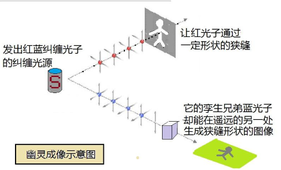
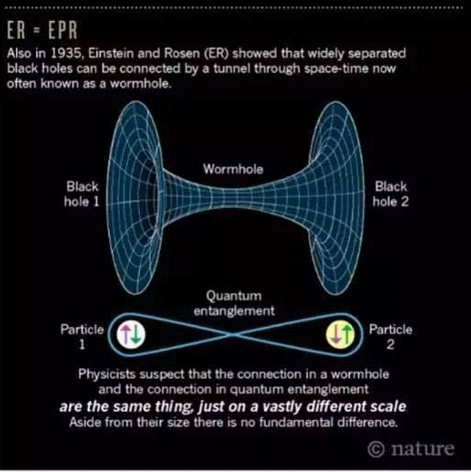

猫、爱因斯坦和密码学：我也能看懂的量子通信
猫、爱因斯坦和密码学：我也能看懂的量子通信
第一集：魔法时代
“任何足够先进的科技，初看都与魔法无异。 ——阿瑟·克拉克 ”
如果你完全不懂量子力学，请放心大胆的往下看，我保证不用任何公式就能让你秒懂，连1+1=2的幼儿园数学基础都不需要。
如果你自以为懂量子力学，请放心大胆的往下看，我保证你看完会仰天长叹：什么是量子力学啊？
正如量子力学大师费曼所说：没有人懂量子力学。如果你觉得懂了，那肯定不是真懂。
在烧脑、反直觉和毁人三观方面，没有任何学科能够与量子力学相比。如果把理工男最爱的大学比做霍格沃兹魔法学校，那么唯一和量子力学专业相提并论的，只能是黑魔法。
然而，量子力学之所以如此神秘，并不是因为物理学家的故弄玄虚。其实，在量子理论刚诞生的摇篮时期，它只是一门人畜无害的学科，专门研究电子、光子之类的小玩意儿。
而「量子」这个现在看来很厉害的名字，本意不过是指微观世界中「一份一份」的不连续能量。
这一切，都源于一次物理学的灵异事件。
百年战争
20 世纪初，物理学家开始重点纠结一个纠结了上百年的问题：光，到底是波还是粒子？
• 粒派
所谓粒子，可以想象成一颗光滑的小球球。
每当你打开手电，无数光子就像出膛的炮弹一样，笔直地射向远方。
很多著名科学家（牛顿、爱因斯坦、普朗克）做了很多权威的实验，确凿无疑地证明了光是一种粒子。• 波派
所谓波，就像往河里扔块石头，产生的水波纹一样。
如果把光看作是一种波，可以完美解释干涉、衍射、偏振等经典光学现象。
很多著名科学家（惠更斯、杨、麦克斯韦、赫兹）做了很多权威的实验，确凿无疑地证明了光是一种波，电磁波。
可问题是，波和粒子毕竟是两种截然不同的东西啊！• 粒子可分成一个一个的最小单位，单个粒子不可再分；波是连续的能量分布，无所谓「一个波」或者「两个波」；
• 粒子是直线前进的，波却能同时向四面八方发射；
• 粒子可以静止在一个固定的位置上，波必须动态地在整个空间传播。
波与粒子之间，存在着不可调和的矛盾。
于是自古以来，塞伯坦星上的科学家就分成两派： 波派和粒派 ，两派之间势均力敌的百年撕逼战争从未分出胜负。
很多人问我：科学家为什么要为这种事情势不两立，大家搁置争议、共同研究不就得了。
为了一个字： 信仰!
千面之神
且问你：《权力的游戏》中，信奉七神的维斯特洛人民，为何要与信奉旧神的关外野人拼个你死我活？
自古以来，人们为了信仰争端大开杀戒，早已不足为奇。
唯一的和谐社会可能是古希腊：他们的神多达百八十号，有管天上、有管地下，各路神仙各司其职，倒也井水不犯河水。
人称：希腊众神。
要命的是，科学家们信仰的神只有一个，而且是放之宇宙而皆准的全能大神。这位神祇的名字，叫作 真理 。
大到宇宙的诞生，小到原子的运转，科学家们相信，这个世界的万事万物都是基于同一个规律，可以用同一个理论，甚至同一套方程解释一切。
比如，让苹果掉下来把牛顿砸晕的是万有引力，让月亮悬在空中掉不下来的也是万有引力。用同一个方程，既能算出地球的质量，也能让马斯克的猎鹰九号火箭上天，这就是科学的威力。
想要一个宇宙、两种规律？
对不起兄弟，别在科学界混了，您可以去跳个槽，比如竞选总统。
当然，科学家们没有谁敢自称是真理的代言人，就连牛顿谦虚起来都是这样的：「我只是一个在海滩上捡贝壳的孩子，而真理的大海，我还没有发现啊！」
就算是捡贝壳，捡的多了，说不定拼到一起就能窥见真理之神的全貌呢！
整个科学史，就像一个集卡拼图的过程。做实验的科学家们每发现一个科学现象，搞理论的科学家们就绞尽脑汁推测它背后的运行规律。不同领域的大牛把各方面的知识、理论慢慢拼到一起，真理的图像就渐渐清晰。
在 20 世纪初，光学的知识储备和数学理论越来越完善。大家逐渐觉得，这一块的真相总算有希望拼出来了——结果却发现，波派和粒派的理论早已背道而驰，还各自越走越远。这就好比你集了一辈子卡片，自以为拼得差不多了。这时突然发现，你拼出的图案居然和别人是不一样的，而且差的不是一点点！
是不是有种把对方连人带图都砸烂的冲动？
当时波派和粒派都坚信，自己手上的拼图，才是唯一正确的版本。双方僵持不下直到 1924 年，终于有人大彻大悟：
波 or 粒，为什么光不能两者都是呢？
也许在某些时候，粒子看起来就像是波；在另一些时候，波看起来就像是粒子。波和粒如同阴阳一般相生相克，就像一枚硬币的正反两面（波粒二象性），只不过我们一直以来都在盲人摸象、各执一词。
真理确实只有一个，但是真理的表现形式，会不会存在着多个版本？
难道真理就是那个千面之神，用千变万化的面目欺骗了我们如此之久？
灵异的实验
究竟是波，是粒，还是波粒二象，大家决定，用一个简单的实验来做个了断：
• 双缝干涉实验：
双缝，顾名思义，就是在一块隔板上开两条缝。
用一个发射光子的机枪对着双缝扫射，从缝中漏过去的光子，打在缝后面的屏上，就会留下一个光斑。（等效于 1961 年电子双缝干涉实验）
在实验之前，科学家的推测如下：
第一种可能 ：
如果光子是纯粒子，那么屏幕留下两道杠。
光子像机枪发射的子弹一样笔直地从缝中穿过，那么屏幕上留下的一定是 2 道杠，因为其他角度的光子都被板挡住了。
第二种可能 ：
如果光子是纯波，那么屏幕上会留下斑马线般的一道道条纹。 光子穿过缝时，会形成 2 个波源。两道波各自震荡交汇（干涉），波峰与波峰之间强度叠加，波峰与波谷之间正反抵消，最终屏幕上会出现一道道复杂唯美的斑马线（干涉条纹）。
第三种可能：
如果光子是波粒二象，那么屏幕图案应该是以上两种图形的杂交混合体。
总之，
两道杠 = 粒派胜；
斑马线 = 波派胜；
四不像 = 平局。
是波是粒还是二合一，看屏幕结果一目了然，无论实验结果如何，都在我们的预料之中。
第一次实验 ：把光子发射机对准双缝发射。
结果 ：标准的斑马线。
根据之前的分析，这证明光子是纯波。OK，实验结束，大家回家洗洗睡吧。
粒派不服：我明明知道光子是一个一个的粒子！
这样，我们再做一次实验，把光子一个一个地发射出去，看会怎么样，一定会变成两道杠的！
第二次实验 ：把光子机枪切换到点射模式，保证每次只发射一个光子。
结果 ：斑马线，竟然还是斑马线，怎么可能？我们明明是一、个、一、个把光子发射出去的啊！
最令人震惊的是，一开始光子数量较少时，屏幕上的光点看上去一片杂乱无章，随着积少成多，渐渐显出了斑马线条纹！
光子要真的是波，那粒派也不得不服。
问题是：根据波动理论，斑马线来源于双缝产生的两个波源之间的干涉叠加；而单个光子要么穿过左缝、要么穿过右缝，穿过一条缝的光子到底是在和谁发生干涉？
难道……光子在穿过双缝时分裂成了两个？一个光子分裂成左半光子和右半光子，自己的左手和右手发生了关系？事情好像越来越复杂了。干脆一不做二不休，我们倒要看看，光子究竟是怎样穿过缝的。
第三次实验 ：在屏幕前加装两个摄像头，一边一个左右排开。哪边的摄像头看到光子，就说明光子穿过了哪条缝。同样，还是点射模式发射光子。
结果：每次不是左边的摄像头看到一个光子，就是右边看到一个。一个就是一个，从来没有发现哪个光子分裂成半个的情况。
大家都松了一口气。 光子确实是一个个粒子，然而在穿过双缝时，不知怎么就会变形成两道波同时穿过，形成干涉条纹。
虽然诡异了些，不过据说这就是 波粒二象性 了，具体细节以后再研究吧，这个实验做得人都要精分了。
然而，就在这时，真正诡异的事情发生了……
人们这才发现，屏幕上的图案，不知什么时候，悄悄变成了两道杠！
没用摄像头看，结果总是斑马线，光子是波；
用摄像头看了，结果就成了两道杠，光子变成了粒子。
实验结果取决于看没看摄像头？
这不科学啊，做物理实验竟然见鬼了啊！
一个貌似简单的小实验做到这份上，波和粒子什么的已经不重要了，重要的是现在全世界的科学家都懵逼了。
这是有史以来第一次，人类在科学实验中正式遭遇灵异事件。
观察者魔咒
你还没看出灵异在哪里？好吧，请先看懂下面这个例子：电视里正在直播足球比赛，一个球员起脚射门——
「咔」暂停，你预测一下这个球会不会进？
在球迷看来： 球进还是不进，和射手是不是 C 罗、梅西有关，和对方门将的状态有关，和裁判收没收钱说不定还有关。
在科学家看来： 有关的东西更多，比如球的受力、速度和方向，距离球门的距离，甚至草皮的摩擦力、球迷吼声的分贝数等等。
不过，只要把这些因素事无巨细地考虑到方程里计算，完全可以精确预测三秒后球的状态。但无论是谁，大家都公认的是，球进与不进，至少和一件事情是绝对无关的：
你家的电视。
无论你用什么品牌的电视，无论电视的屏幕大小、清晰度高低、质量好坏，无论你看球时是在喝啤酒还是啃炸鸡，当然更无论你看不看电视直播——该进的球还是会进，该不进就是不进，哪怕你气得把电视机砸了都没用。
你是不是觉得，上面说的全都是废话？那么，仔细听好：
双缝干涉的第三次实验证明了，在其他条件完全相同的情况下，球进还是不进，直接取决于在射门的一瞬间，你看还是不看电视！
看还是不看，这是一个问题！
光子从发射器射向双缝，就好比足球射向球门；用摄像头观测光子是否进缝、怎么个进法，就好比用电视机看进球。
第三次实验与第二次的唯一区别，就是实验 3 开了摄像头观察光子（看电视），实验 2 没放摄像头（不看电视）——两次实验的结局竟截然不同。
这，就是观察者的魔咒。
难道说，不看光子它就是波，看一眼，它就瞬间变成粒子？
难道说，「光子是什么」这一客观事实，是由我们的观察（放不放摄像头）决定的？
难道说，对事物的观察方式，能够改变事物本身？
三观崩塌
在所有人懵逼的时候，还是有极少数聪明人，勇敢地提出了新的理论：光子，其实是一种智能极高的外星 AI 机器人。
之所以观察会导致实验结果不同，是因为光子在你做实验之前就悄悄侦查过了，如果发现有摄像头，它就变成粒子形态；如果发现是屏幕，就变成波的形态。
这个理论让我想起了传说中的： 难道机器人阿童木真的存在？（「阿童木」是日语「アトム」的发音直译，词语源自英语「Atom」，意即「原子」）
这种扯淡理论居然没被口水喷死，还要做实验去验证它，可见科学家们已经集体懵逼到了什么地步。
第四次实验
事先，只有屏幕没有摄像头；
我们算好光子穿过缝的时机，等它穿过之后，再以迅雷不及掩耳之势加上摄像头。（等效于 1978 年惠勒延迟选择实验）
结果是啥？
无论加摄像头的速度有多快，只要最终加上了摄像头，屏幕上一定是两道杠；反过来，如果一开始有摄像头，哪怕在最后一刻秒秒钟撤掉，屏幕上一定是斑马线。
回到看球赛的那个例子，就好比：我先闭上眼睛不看电视，等球员完成射门、球飞出去 3 秒钟后，我突然睁开眼睛，球一定不进，百试百灵。
在你冲出门去买足彩之前，我先悄悄提醒你：这种魔咒般的黑科技，目前只能对微观世界的基本粒子起作用。要用意念控制足球这样的大家伙，量子还做不到啊！
请注意，加不加摄像头，是在光子已经穿过双缝之后再决定的。不管光子在穿缝的时候变成什么形态，过了缝应该就定型了。
既然光子的状态在加摄像头之前就定型了，为什么实验结果还是能在最后一刻发生变化？
难道说，在之后做出的人为选择（未来），能够改变之前已经发生的事实（历史）？
而且，加摄像头的速度，可以做到非常快（40 纳秒）。就算光子真的是个狡猾的微型变形金刚，当它变成波的形态穿过双缝，在最后一刻却发现面前是一个摄像头时，它也来不及再次变身了吧？
「主观决定客观」「未来改变历史」「外星人其实是无处不在的光子」…… 好端端一个实验弄得谣言四起，物理学家们纷纷感到几百年来苦心经营的科学体系正在崩塌。
与之一起崩塌的，还有全人类的三观。
量子魔法时代的大幕，正在徐徐拉开。
让爱因斯坦发怒的幽灵
1935 年，薛老师很忙。
除了 N 多前女友和养猫以外，薛老师发现了量子的另一个诡异之处，而当时几乎没有人注意到这个问题。
为了研究微观世界，看看原子核这个大西瓜肚子里都有些什么籽儿，科学家祭出了最强大的武器：粒子对撞机。
欧核中心（CERN）的加速器就是干这个的：
最常见的现象是：母粒子被撞击后，分裂成两个更小的粒子 A 和 B。
因为能量守恒原理，子粒子能量相同，方向相反。比如说，因为母粒子静止不动，所以分裂后的子粒子 A 向左边飞，B 一定往右边飞，这样才能左右抵消。同理，A 的自旋（角动量）向上，B 的自旋一定向下。
至于具体是向上还是向下，这是个随机事件，必须观测后才能知道。
那么问题来了：根据量子理论，在不被观测的情况下，粒子处于多种可能性的叠加态。
举个例子：
就像箱子里那只不死不活的薛定谔的猫一样：A 和 B 这对龙凤胎粒子，自打出娘胎起，他们的性别就没确定，直到有人来看了一眼，这才瞬间分出男女！
然而和薛猫不同的是，箱子里的猫只有一只，孪生粒子却有两个。而且，这两个粒子即使相隔很远很远，叠加态也能保持不变。如同在千里之外，瞬间产生联系……
是时候@爱因斯坦了。
来自幽灵的威胁
大家都知道爱因斯坦创立了相对论。但很少有人知道，大神在 35 岁就已经功成名就（完成狭义+广义相对论），而在之后 40 年的悠长岁月里，他其实都在纠结一件事：量子力学。
曾经，他也是一个集美貌与才华于一身的男子：
研究量子力学 30 年之后：
能让爱因斯坦这种大神级人物「不明白」的，不是深奥的理论和复杂的公式，而是宇宙的意义。
爱因斯坦深信，宇宙在本质上是高度和谐的，这种和谐是可以通过数学之美体现出来的。
所以，一个理论如果不美，倒不是说一定是错的，但它肯定不够本质。
在更高的层面上，和谐，比对错更重要。而量子力学，在爱因斯坦看来，就是一种不和谐（不完备）的理论。
比如，量子力学的核心思想是：
微观世界的一切只能用概率统计来表达，而具体到单个的粒子，它的状态是不确定的叠加态。把这个粒子放大 N 亿倍，就成了薛定谔的猫。
这是第一个让爱因斯坦不爽的地方：量子力学否认了物质的实在性。
爱因斯坦认为，根本不存在薛定谔思想实验中那只不死不活的叠加态的猫。猫的死活在观测之前就是定数，只不过愚蠢的人类看不见箱子里发生的一切，只能推测出「50% 活 or 50% 死」的概率。
你是不是突然有一种，和爱因斯坦英雄所见略同的感觉？
打个不太恰当的比方（给量子打个恰当的比方真的好难！）：
比如，我在知乎的粉丝男女比例是 80:20。
我相信，每个关注我的知友，一定都对自己的性别深信不疑。
然而，那些发明量子力学的疯狂科学家们，他们竟然说：80:20 的比例，说明每位知友的性别是不确定的，见面时 80% 的可能性会变成男生，20% 的可能性变成女生！
因为只有这样我才能解释，为什么线下活动时见面的都是男生，而索要福利的都是女生。至于女生为什么没来，可能是出于一些很简单的原因，比如当天身体不舒服。
仅仅因为我们不知道背后的原因，就认为人的性别是可以按一定概率随机改变的，纯属不切实际的猜想。 这个「背后隐藏的原因」，学名叫作 「隐变量」 。
当时包括爱因斯坦在内的很多人都以为，一旦我们揪出了隐变量，量子力学那些混沌不清的阴暗角落，就会被照亮得一览无余。
一个不掷骰子的上帝，一个确定无疑的世界，一个可以被人类的直觉完全理解的宇宙——这就是爱因斯坦的终极梦想。到那时，「薛定谔的猫」之类的奇幻故事，只能给孙子当哈利波特讲了。
结果，猫的故事还没讲完，薛老师又想了一出「孪生粒子叠加态」，第二次触怒了爱因斯坦大神。
因为这一次，量子力学要挑战的是相对论。
研究微观小世界的量子力学，怎么会和研究宏观大宇宙的相对论结下梁子呢？
这又是薛老师「一不小心」捅下的篓子。 在薛定谔「孪生粒子」的思想实验中，两个相距万里的粒子，观测出 A的状态，也就知道 B 的状态，因为 A 和 B 都是一个母粒子分裂而成的， B 的状态一定和 A 相反 。
因为 A、B 两个粒子的 命运紧密相连 ，牵一发而动全身，所以薛老师给起了个性感的名字： 量子纠缠 。
这就好比如：母亲把一双鞋分给兄弟俩，他们各带一只远走他乡。中国的哥哥打开盒子发现是左脚，就知道弟弟带到美国的另一只一定是右脚。
看上去，这并没有什么稀奇。
稀奇的是，根据量子力学的说法，弟弟那只鞋左还是右，不是他妈决定的，而是哥哥「打开盒子」的行为决定的。在哥哥看到左脚鞋的一瞬间，鞋里飞出一个神秘的信号，闪电般穿过千山万水，通知美国的另一只鞋变成右脚！
这个速度能有多快？
无限快。
但是，上帝允许无限快的瞬时传送吗？
在这个宇宙中，没有东西能超过真空光速。不要说超过光速，就是试图接近光速的行为，都会导致时空的畸变。
宇宙的尺度是以「亿光年」为单位计的，在恢宏的空间中，银河系一边发生的任何事情，不可能立即对彼岸的世界造成影响。
就算此时此刻太阳爆炸了，我们还能逍遥自在地活 8 分钟，因为 8 分钟后，光才来得及从太阳飞到地球。
通过对粒子 A 的观测，居然瞬间让远方的粒子 B 的量子叠加态塌缩了——这被爱因斯坦斥为「幽灵般的超距作用」。
在严谨的学术界，「幽灵」是一个让人联想起伪科学的词。不存在超光速，更不存在超距作用，因为这是相对论的大前提：局域性。如果量子纠缠允许超光速，那么，是量子力学错了，还是已经被无数次实验证实的相对论错了？
在爱因斯坦看来，这压根不是个问题。
一双鞋，俩兄弟当时分到的就是哥左弟右；两个粒子，在分裂的一瞬间 A、B 的状态就是确定的。尘埃落定之后，你爱怎么观察就怎么观察，为什么要信量子力学那一套「观察决定实验」的鬼话？
只可惜，在量子面前，人类的直觉和常识又一次大错特错。
终极黑客：约翰·贝尔
超距作用（量子）vs 局域性（爱因斯坦），人们曾经以为，这是个永远不会有答案的问题。
因为如果做实验验证，这两者根本没法区分啊！
比方说，先制备一对所谓的纠缠态粒子，然后一个运到北京，一个放在上海。我先测量到上海的 A 粒子自旋向上，然后打电话去问北京的同事：哥们，你那边测下 B 是什么态？
100% 是自旋向下！爱因斯坦和量子理论都预言，B 的自旋一定和 A 相反。
也就是说，仅凭测量是不可能区分两种说法谁对谁错的，这就好比两个人都赌同一个球队赢，如何分胜负呢？但是不测量，又怎么可能知道它在测量之前是什么？
显然，这个问题无解。
30 年过去，爱因斯坦、玻尔、薛定谔等一代宗师已经成为逝去的传奇，然而还是没有人认真思考过这个问题。
也许这就是为什么，做出这个近代物理学最重要的大发现的人，不是某位著名的教授，而是一位当时还默默无闻的工程师，也难怪当他投稿之后，文章居然被杂志编辑「不小心」弄丢了，拖了一两年才发表。
约翰·贝尔，36 岁提出「贝尔不等式」，欧核中心（CERN）加速器设计工程师，爱因斯坦的脑残粉，业余爱好是研究量子力学的基础理论。
我一直觉得，贝尔不像个正统科学家，更像个「物理学黑客」。虽然和计算机黑客相比，他破解的是原子而非比特；但是，论及思维之独特、技巧之高超、发现漏洞之敏锐，则是有过之而无不及。
众所周知，粒子 A 的自旋一定和 B 相反；但贝尔发现，所有人都忽略了一件事：自旋在三维空间是有 3 个分量的。 A 在 X 轴的自旋分量（Ax）如果向上，B 在 X 轴的自旋（Bx）一定向下，但是 B 在 Y 轴和 Z 轴上的自旋（By、Bz）呢？
如果爱因斯坦的局域性理论是对的，By、Bz 应该和 Ax 一毛钱关系没有，但是用量子力学算出来的结果，却有着微妙的区别：在某些情况下，By、Bz 和 Ax 之间竟存在着微弱的关联！
其他科学家们看到「贝尔不等式」先是嗤之以鼻，接着目瞪口呆，最后是深深的悔恨。这个深藏 30 年的宇宙级 bug，就这样被贝尔这位工程师挖了出来。
贝尔不等式的诞生，宣告了量子局域性之争，从哲学思辨变为实验可证伪的科学理论。
20 年后（1982），法国人阿兹派克特（Aspect）第一个成功验证了贝尔不等式，结论： 量子力学获胜，幽灵般的超距作用，是真的！
万万没想到，实验结果揭晓之后，最高兴不起来的居然是贝尔本人。原来贝尔是爱因斯坦的忠实信徒，人家下班不约会而去搞不等式的目的，就是为了证明量子力学错了！
之后，贝尔花了大半辈子的时间，试图找出实验的漏洞，直到去世之前还在思考如何修正局域性理论。
当然，这一切并没有什么用。
从阿兹派克特实验至今 30 多年，人们在光子、原子、离子、超导比特、固态量子比特等许多系统中都验证了贝尔不等式，所有的实验无一例外，全部支持量子理论。
如今，除了层出不穷的民科，已经没有人怀疑量子世界的奇异和真实。但很多人还是忍不住会想，贝尔不等式什么的还是太抽象了，能不能亲眼见证量子纠缠的魔力呢？
幽灵成像实验
比起喜欢用数学公式讲道理的贝尔，搞量子光学的史砚华可就实在多了。
我觉得，史教授 2008 年发明的「幽灵成像」，应该是证明量子纠缠绝非幻想的最直观的实验。
请认真看下图：

幽灵成像的原理通俗易懂：先把红光子和蓝光子「纠缠」到一起，然后两者分开各走各路。红光穿过狭缝打出一定形状的图案，蓝光不穿缝正常走。
实验结果绝对震撼：明明没有穿过狭缝的蓝光，竟然也投射出了与红光相同形状的图像！
如果这个实验能够早 70 年做出来，我真想看看爱因斯坦的表情。
这次，你总不能说：光子在纠缠之前就已经是那个形状了吧！
穿缝还是不穿缝，显然是在光子出发后才决定的。发生在红光子身上的所有事，蓝光子也会分毫不差地经历一遍。这样看来，仅仅把量子纠缠比作龙凤胎还远远不够，他们出生时珠联璧合，长大成人之后仍然是生死与共！而且，通过改变红光那边狭缝的形状，想让蓝光打出什么样的图案都可以。
这就意味着，我们可以远程发送图像甚至视频，而无论距离多远、哪怕从宇宙的另一端传过来都是瞬时传输的，延迟时间永远为 0。
然而，这岂不是违反相对论（任何信息和物质不能超过光速）的公理了吗？
并没有！
虽然信息是瞬时传送过来了，但要把其中的乱码剔除，提取出真正的内容，还是必须把图像用不超光速的传统方式再发一遍。让爱因斯坦操碎了心的「超光速」问题，原来只是杞人忧天！
大自然就是如此微妙。 宇宙的规则也许看似奇怪，内在却有着惊人的自洽性。
我们只能说相对论和量子力学之间存在着理论上的矛盾，但从来没发现物理规律本身有自相矛盾的地方。
如果把宇宙看作一个产品，最令人细思恐极的是：无论狡猾的人类捣鼓出多么刁钻古怪的实验，这个同时在线用户数高达 10^80（1 后面跟 80 个 0）的产品却从来不会被搞出 bug。
如果宇宙真有一个产品经理的话，请收下我卑微的膝盖，顺便想问一个问题是：为什么您的宇宙中会有量子纠缠呢？
量子纠缠背后的秘密
100 年前，量子力学的祖师爷玻尔说：如果谁没有被量子力学惊到，那他肯定不懂量子力学。
爱因斯坦： 我思考量子力学的时间百倍于广义相对论，但依然不明白。
造出第一颗原子弹的费曼更直接： 没有人懂量子力学！
学了 100 多年的量子力学，今天，我们懂了吗？
墨子号首席科学家、中国量子通信第一人潘建伟说：「如果能搞清楚为什么有量子纠缠，我可以现在去死」，接着潘老师又说：「但是现在还没搞清楚，所以我想活得长一点……」
考虑到潘院士今年才 46 岁，这句话似乎暗示着，我们在 50 年后都不一定能搞懂量子了。
这些牛人说的「不懂」，可不是小学生学不会四则运算的那种「不懂」。我们已经搞清了微观世界的所有基本规则，建立了强大的数学模型，算出来的理论预测和实验结果分毫不差，但我们还只是一个拿到使用说明书的孩子，对于其意义和目的一无所知，莫名地好委屈。
然而现在，越来越多的线索显示，量子纠缠的背后，可能隐藏着一个巨大的秘密。
2013 年， Maldancena 和 Susskind 发现，量子纠缠和虫洞（虫洞即爱因斯坦·罗森桥）在数学模型上非常相似。他们猜想，量子纠缠也许就是一个微型虫洞。
量子纠缠中最神秘的现象「超距作用」其实并没有超越光速，而是像虫洞那样穿越了时空。这就是为什么，孪生粒子能够异地千里，同呼吸、共命运的真正原因。
请认真看下图：

而在2010 年 Van Raamsdonk 的独立研究中，发现了更为惊人的线索。
他建立了一个类似真实宇宙的三维宇宙模型，一旦在模型中去掉量子纠缠，时间和空间就会被打乱成碎片。
正是无处不在的量子纠缠，像建筑物的钢筋结构件一样，把本应支离破碎的时空编织成了一个整体。
在有进一步的实验证据之前，我们无法评价这些猜想有多靠谱。但是令理论物理学家们心跳加速的是，各条独立的线索似乎指向着同一个宝藏。找到它，发现量子纠缠真正的秘密，就有可能理解在开天辟地、宇宙洪荒的大爆炸时刻，宇宙是怎样被建造出来的。
为了传说中的 One Piece ，越来越多身怀绝技的人踏上了量子时代的大航海之路。
有人说：哲学家们总是用各种方式解释世界，但问题在于改变世界。其实，科学和文明的高度，取决于我们对于世界理解的深度。
通过认识和理解世界，猿人把手中的石块换成了自然规律，拥有了改天换日的力量。当一群不食人间烟火的理工男在实验室热烈地争论原子模型时，谁能想到，30 年后广岛在火海中的哭喊？
自从 1900 年普朗克发明「Quantum」这个单词至今，量子终于从哲学辩论会的题材，变成了魔法般的黑科技。
基于量子纠缠，可以造出比现在快 1 亿倍的量子计算机，而超距作用和贝尔不等式，则把量子纠缠变成了加密通信领域的终极武器。
改变世界的时刻真的到了！